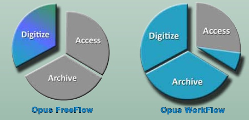
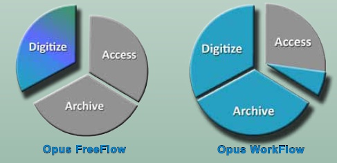

OPUS FreeFlow Systems
Freedom to Digitize Ad-Hoc & On-Demand
Photos, Maps, Documents, Books, ...
The Opus digitization process was designed specifically for academic libraries, museums and archives. Use Opus FreeFlow to build digital assets for preservation, archive, digital collections for the Web, and for viewing software. Its image treatment processes such as fan, gutter and book curvature removal, and content location and registration, are dramatically faster and easier to use than photo editing software.
Opus FreeFlow operates a wide array of preservation quality scanners and allows for the import of existing images as well. It then groups images into objects (i.e. books), which are easily managed and processed. Finally, it renders those objects into a variety of derivatives.
With Opus FreeFlow 3-tab interface, users can switch dynamically between scanning, image treatment and outputting derivatives. Multipage objects can be reopened and reprocessed at any time. Pages can be deleted and rescanned and new pages can be scanned and inserted. Unlimited derivatives can be created with variations in image size, resolution, format and file type.
Opus FreeFlow is fully compatible with Opus Digitization Workflow software. While objects are in the middle of the Opus workflow, they can be opened with Opus FreeFlow for additional scanning, image modification and derivative generation.
Opus FreeFlow digitization software provides all the necessary functionality to create digital books and other materials from scanned images. Prior to Opus, digitization had to be performed one image at a time using photo editors for image treatment, and content managers for keying metadata. With Opus Freeflow, after scanning and treating images, digital derivative images are output to destinations such as digital content management systems and digital master images to digital archive systems.
Opus Workflow software allows for the use of temporary workers with minimal training while minimizing the chance of errors and ensuring that preservation quality standards are met. Unlike FreeFlow, Opus Workflow applies somewhat rigid management principles. Opus FreeFlow and Opus Digitization Workflow work seamlessly together to allow a trained digitization staff member to perform processing at any time and output independently of the structured workflow.
In addition, Opus FreeFlow works with third-party software. For example, if a user wishes to perform an image treatment function supported by a popular photo editor, the press of a button in Opus FreeFlow can launch the third-party application with the current image ready for editing. Once the edits are completed and saved, exiting the photo editor will return the user to Opus FreeFlow with the image showing the modifications that were made.
| Scanning |
|---|
| Containerizes the images of an object |
| Supports continuous (batch) scanning |
| Supports multiple concurrent objects - suspend and resume scanning of unfinished objects |
| Supports all Scan2Net® scanners |
| Supports many TWAIN scanners |
| Supports insertion, deletion, rescanning and rotation of images |
| Supports undo/redo |
| Image Treatment |
|---|
| Automatically locates content (configurable) |
| Automatically splits pages (configurable) |
| Automatically removes fan and gutter (configurable) |
| Automatically corrects for book curve (configurable) |
| Automatically levels background |
| Manual review, redo and override |
| Automatic process can be individually invoked by user |
| Collection Composition and Creation |
|---|
| Current object output of images in formats that can be imported by D-SPACE, Content DM, Fedora, Re-Discovery and other content managers |
| Derivative attribute specification (e.g. file format, size, resolution, color depth, quality factor) |
| Output of TIFF, JPEG, PDF, PNG, GIF, rich text, ASCII, Unicode, audio & other file formats, (one image per file or the entire volume in one file) |
| Output of full images, reduced images, Web images, thumbnail images |
Opus FreeFlow versus Opus Workflow
Features Comparison
Opus FreeFlow is an application that provides the scanning, image treatment and derivative creation capabilities of the full Opus Digitization Workflow system outside of its structured project management environment. Opus FreeFlow doesn't capture or output metadata or perform automatic archiving. Opus FreeFlow is fully compatible with Opus Digitization Workflow software. While objects are in the middle of the Opus Workflow, they can be opened with Opus FreeFlow and additional scanning performed, images modified and derivatives created.
 

| Define Projects Features and Capabilities | FreeFlow | Workflow |
|---|---|---|
| Creates and manages projects | YES | |
| Creates and manages project templates | YES | |
| Creates and manages objects | YES | |
| Prints object tracking sheets | YES | |
| Maintains a project history database | YES |
| Scanning Capabilities | FreeFlow | Workflow |
|---|---|---|
| Automatically reads tracking sheets | YES | |
| Containerizes the images of an object | YES | YES |
| Supports continuous (batch) scanning | YES | YES |
| Supports multiple concurrent projects and objects - suspend and resume scanning of unfinished projects and objects | YES | YES |
| Supports all Scan2Net® scanners | YES | YES |
| Supports many TWAIN scanners | YES | YES |
| Supports insertion, deletion, rescanning and rotation of images | YES | YES |
| Supports insertion, deletion, rescanning and rotation of images | YES | YES |
| Supports undo/redo | YES | YES |